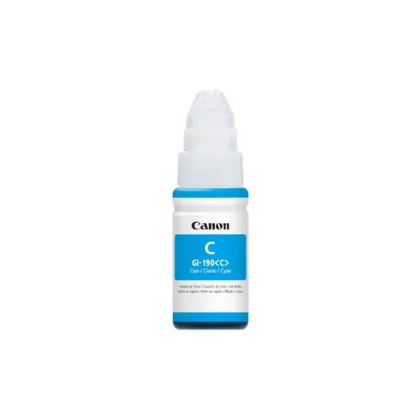
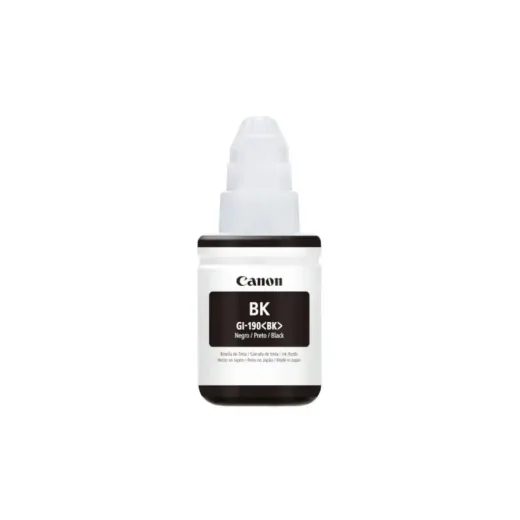
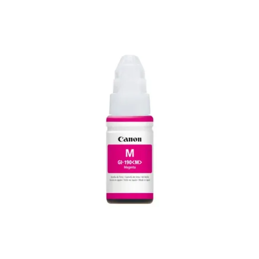
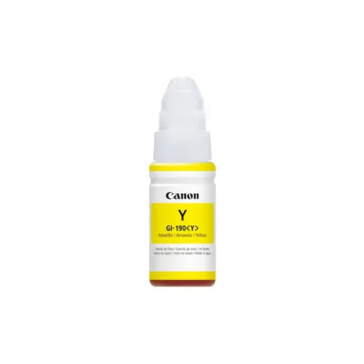
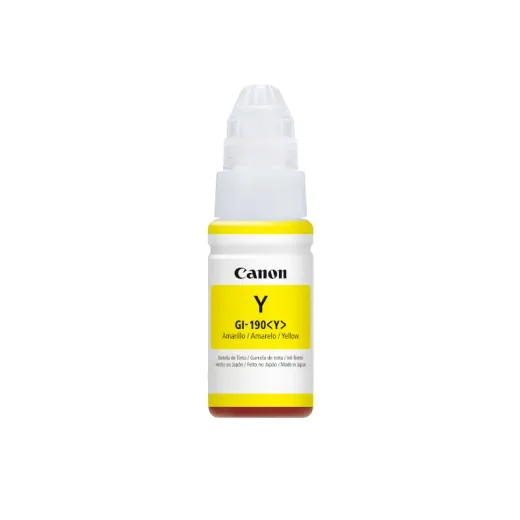
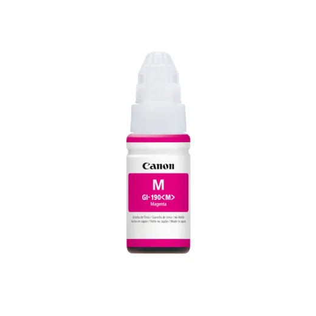
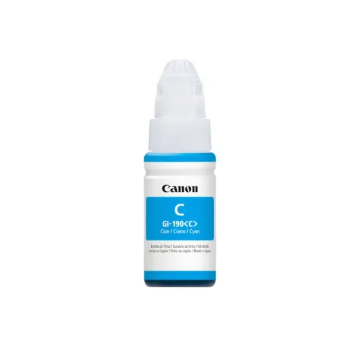
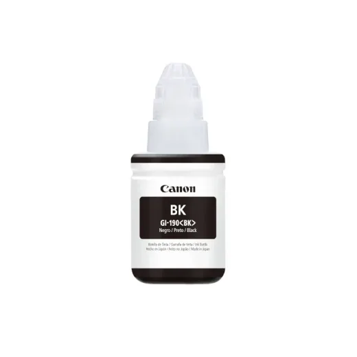
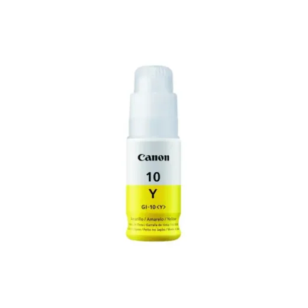

Inicio › Otros de tecnología y hogar

Canon · Modelo GI190C
Bote de Tinta Original Canon GI-190C Cyan 70ML
L 325
En Sycom
Precio en cada tienda
| Tienda | Precio | Antes | Disponibilidad | |
|---|---|---|---|---|
| Sycom | L 325 | — | Disponible | Ver en tienda › |
Precios referenciales tomados de cada tienda el 14 de noviembre de 2026. El precio válido es el que muestra la tienda al comprar.
Otros otros de tecnología y hogar Canon

Bote de Tinta Original Canon GI-190BK Negro 135MLL 325En Sycom
Bote de Tinta Original Canon GI-190M Magenta 70MLL 325En Sycom
Bote de Tinta Original Canon GI-190Y Amarillo 70MLL 325En Sycom
Tinta Canon Gi-190 Yellow 70mlL 330En Acosa
Tinta Canon Gi-190 MagentaL 330En Acosa
Tinta Canon Gi-190 Cyan 70mlL 330En Acosa
Tinta Canon Gi-190 Negro 135mlL 335En Acosa
Bote de Tinta Original Canon GI-10Y AmarilloL 402.5En Sycom